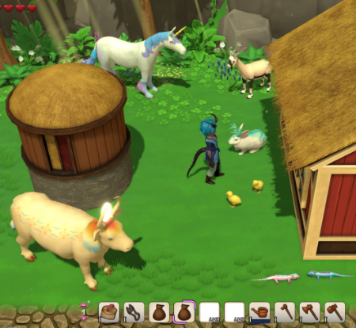
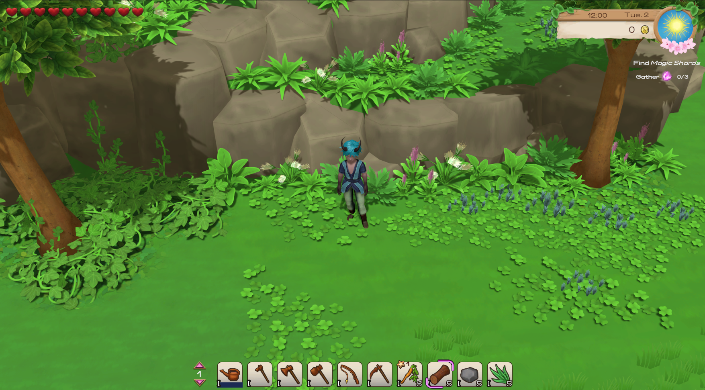

December 24 2022 - Merry Christmas & Year-recap

Isa:
Merry Christmas!
And soon a year comes to an end...
We've been working on Magical Harvest for a year now, and we're further along than expected and not as far along as originally planned (which is good though - more on that later).
Besides working on the game, a bit has happened in our lives as well.
Personal
A little review about this year, what happened in our personal life:
- Since spring, Marie has been working on Magical Harvest only in her spare time because of her main job (we have to live from something). And for that she helps me immensely!
- we attended the next Swedish course (12h per week) from February to June and I attended again from September to November, but unfortunately it took too much time for too little progress (the pace of the lessons was too slow)
- in summer we got engaged and will get married next July
- we had planned trips to Germany to visit our families, but had to postpone because of Corona
- Vet! Thanks to our cat, we have been there often because he has a food allergy. That cost time and nerves....
Magical Harvest
In general we have worked a lot on Magical Harvest (I partly 70-80 hours per week), but of course many things came in between. Nevertheless we are satisfied with our progress.
The demo, which we focused on between June and November, has brought us a good deal further, but also cost us a lot of time. Based on the knowledge gained, we have been able to develop, among other things, a style for the game world that can run without problems on SteamDeck, for example, and we are even more confident than before that the direction of Magical Harvest is the right one.
Programming-wise, I have implemented all the core features of the farm, the animals are currently still being worked on, but will be finished this year (programming-wise), except for the mini-game to crossbreed animals.
Also, the logic for translations is already implemented and some other points that were implemented thanks to the demo and otherwise would have found their way into the game later (which would have been a lot more work).
New character-artist: Lura
With such a big project you are not always confident, especially with such a small team. I, in particular, often vacillate between "there's still way too much to be done" and "oh, soon all the features will be programmed - then the progress will be more visible!".
And then there are moments like in November, when we were contacted by our new character illustrator Lura, asking her to draw our Bachelors/ettes. Because of her motivational skills and abilities we accepted her into our team (and especially because of her skills of course!) and fitting for Christmas she finished with the Bachelorette "Thalana", a Nereid (sea woman) who is afraid of water .
Lura adapted her style according to our wishes and showed real talent! We are very happy to welcome her to our little team!
Lura's Tumblr: Poke-chann-draws
Marie is currently working on the design of the city, which is divided into 3 different districts with their own architectural style. This is also motivating as the world is slowly being given more and more life. Each district belongs to one of the game's factions. The player can also apply the building style to his own house later on.
Financial
Unfortunately, we still have no financial support, but we will try to launch a Kickstarter campaign in 2023. Possibly not until 2024. Something like this takes a lot of time of preparation and also nerves and until then we definitely need to be able to show something more. Indie-game-marketing is of course also a difficult point. As long as too few people know about our project, such a campaign doesn't make sense either and to be honest, we are not the most talented social media users. But we will try to make this a bit more active and interesting in 2023 (including the things we show).
If you want to support us right now, check out Patreon: Patreon.
This will allow us to invest more in the development of the game (art, soundtrack, [...]).
We would also like to thank all the Patrons who already support or have supported us, even though the world market prices are currently rising (which of course also affects us...).
Outlook
We definitely want to be "feature-complete" by mid 2023! At least with the base logic of the game. That means that "only" the base logic of the NPCs has to be programmed, the character-creator and the minigames. Of course, that's not all, but those are the bigger parts.
Besides programming, I'm also creating assets for the game at the same time, so I'm not spending 100% of my time on programming. In the end, we try to get as far as possible!
Thank you for your confidence, support and interest! We hope you have a good time and enjoy the holidays!
Let's hope that the world will be a little better in 2023 and that everyone will be healthy and happy through the year!
Merry Christmas and a happy new year!
Best regards,
Your Magical Harvest Team
Isa & Marie
Lastly, here's a little video showing the development of Magical Harvest over the year.
December 01 2022 - Animals!
Hello Farmer!

Animals
There are more farm animals in Magical Harvest than in traditional farming games. This is due to our "crossbreeding" system. This means that you can partially crossbreed animals to get magical animals.
Currently, the focus is on creating the 27(!) farm animals. First the 3D models are created, then textured and then the animations follow. This takes a lot of time, but it's worth it. It will probably take most of the month just to make the models and textures. The animations will follow later.
The current progress and therefore finished animals and information about them can be found on our Patreon page (viewable for free).
Demo
We had last released the demo and a big update to it. However, the demo is now offline on Steam - why? While trying to make last-minute-performance improvements, some bugs occurred. Fixing them would have taken more time and been irrelevant to further progress.
Thanks to the demo, however, we have already implemented many things into the game that will simplify future development and save us a lot of rework. Now, however, we are back to adding new features and adapting the world based on our insights.
One point, for example, is the reworking of the entire appearance of the game world. It will look much more coherent and better for the performance of the game (less/hopefully no lags on older computers or on the Steam deck).
The current pictures of the environment are not final, but it will go in that direction.

We wish you a wonderful Christmas season! Enjoy the advent days!
See you on 15 December for the next update!
Are there things you want to know from us? Write to us!
Best regards,
Your Magical Harvest Team
Isa & Marie
November 15, 2022 - Demo-Update!
Hello Farmer!
Finally! The demo update!
 We have decided to end the revision of the demo at this point! The creation and improvement of the demo has brought us a lot further. We were able to identify the main problems (e.g. performance) and were able to implement and improve many things that will save us a lot of rework for further development.
We have decided to end the revision of the demo at this point! The creation and improvement of the demo has brought us a lot further. We were able to identify the main problems (e.g. performance) and were able to implement and improve many things that will save us a lot of rework for further development.
A big point that comes next is to create a more suitable environment. In the demo there are still some placeholder assets in use and we also need to adjust a few things for performance. First of all the trees. This means a complete overhaul of the environment and the first test runs are very promising.
Unfortunately, thanks to Corona, we were still a bit stuck in the progress, so we'll refrain from making any more improvements to the demo. Otherwise we'll probably never really get any further :D.
Currently, we are also trying to write more information on our Patreon page. A lot of it will be more "behind the scenes", the story
around the characters and hyldena and also a bit more personal.
Here are the patch notes for the demo:
Settings: - added German localization
- renamed settings to "System Settings" and added a "Game Settings" menu
- System settings: - added Language-dropdown for selecting language (currently English & German)
- Game settings: - added header font dropdown to change the header font
- added font dropdown to change the base font
- added a text speed selection
- added a toggle for metric or imperial measuring system
- added a toggle for time format selection
- added a toggle to toggle on/off the additionally Magical-level icons
- reworked all UI visuals with a much cleaner style
- Item icons: a small roman number in the bottom left shows the magic level of this item additionally to the coloured background. Can be turned on and off in the game settings
- Items have two types of icons now: one outlined for the smaller displays and one "illustration"-type of icon for the bigger displays.
- added controller support
- added SteamDeck support
- added Cloud-save
- sensor for multiselection reworked
- the helpers at the top middle part of the screen have been reworked
- added some more input possibilities - Tool-usage: right-mouse-button or Space - Multiselection cancel: left-mouse-button or E - Interaction: left-mouse button or E
- game fits in most screen ratios now (horizontal ratios above 4:3 resolution)
- bugfixes
Best regards,
Your Magical Harvest Team
Isa & Marie
November 01, 2022 - Next Bachelor: Zarek
Hello Farmers!
We've had a lot to do in the last two weeks!
The UI has been redesigned and there is definitely a difference in quality. We are still implementing controller support, which is a
bit more nerve-wracking than we first thought. Every UI window has to be adjusted and button helpers have to be inserted and displayed
correctly. But it's progressing well.
Crossbreeding test:
Last week, we participated in a GameJam to test the Magical Harvest breeding system.
(What is a GameJam? It is an attempt to create a finished game within a certain period of time. These are, for shorter Jams, usually smaller
games of a few minutes playing time. The duration of a jam varies from 24 hours to a few days. There are also longer, more challenging jams.)

The GameJam lasted 5 days and in this time we created the small game "Monster Book of Monsters" where you can crossbreed monsters. The
mini-game included in it is the precursor to the breeding system between different species in Magical Harvest. The game was well received and
therefore passed the "user test".
You can play the game (for free) here: Itch io - Monster Book of Monsters
As we worked under time pressure, we couldn't come up with high quality 3D models and animations.
Next Bachelor: Zarek
In addition, the illustration of the next bachelor is finished: Zarek.
Zarek is a Nereid and fisherman, but he prefers to fish with his spear than with a fishing rod. He is very self-confident and has a
dream which he is trying to fulfil. Would you like to help him?
More information about Zarek will follow soon!
Artist: Ulfenheim
What's next?
We will continue to work on the demo. Unfortunately, we also have trips abroad coming up, so that will set us back a bit
more in terms of time. But we'll do our best to have an update available at least in November, which will significantly
increase the quality of the game.
Best regards,
Your Magical Harvest Team
Isa & Marie
October 15, 2022 - The journey continues!
Hello Farmers!
What exciting days!
You've been able to play the demo on Steam and
Itch io for a few days now.
Now there is a lot for us to do! The first goal is to improve the pre-alpha demo, especially in the visual aspect, in order to continue the development of Magical Harvest.
Also
- Implementing the localization options (German for now)
- Controller support (and thus Steamdeck support)
- Players can change the font in the options
Most of this is already done, but currently the whole UI is being visually reworked. This will take more time, but it will make the UI much better and more fitting!
We have already received feedback regarding the demo and thank you for it! Every feedback helps us to know if we are going in the right direction (which is the case) and where we need to rework.
Things that have been noted and need to be improved (besides the graphical aspects):
- The puzzles in the mine are too hard.
- The old farm was not found/only found with difficulty.
- The Steampage (will be adjusted after the graphical revision).
First character!
The illustration of Neria from the race Drakys was created by the talented hand of Ulfenheim. Based on this, the portraits are created with different facial expressions that will be used for the dialogues. We will introduce her in more detail later.
Currently, the merman Zarek is being worked on (Nereid race).
And now... back to work. The UI is waiting.
Best regards,
Your Magical Harvest Team
Isa & Marie
October 01, 2022 - 3 days left!
Hello Farmers!
3 days left! On 04 October at 4pm CET you can play the 5-hour demo on Steam or
Itch io!
We are very excited and excited ourselves!
In the last few days, we have hardly had to fix any bugs. In this context, not really bugs, but rather improvements. We are
happy with the current state and ready to release the demo.
We have used the time to test the demo extensively. The main quest is achievable, but it might take more than one playthrough.
You can also, if you are not a fan of puzzles, join together in the Discord and help each other out!
Discord
We have a new Discord-Server! It offers more channels and more information about Magical Harvest and a. o. is linked to our Patreon.
Patreon
Our Patreon is now live! You can support us via Patreon and get some benefits. There you can also find work-in-progress updates or information about backgrounds for design decisions.
Over time, more and more posts will be added there.
For example, you will also find concepts of the Bachelors of Magical Harvest!
Donation-DLC
Those who like to support us but don't like Patreon can also buy our Donation-DLC on Steam, which is also live now.
The DLC is purely for donation and offers no additional content or benefits (unlike Patreon).
Bachelors
We are currently in the process of designing all the bachelors. So things are progressing in this area as well!
Initially, there will be one male and one female bachelor of each race. We are trying to diversify them in terms of appearance and character so that there is something for everyone. Later, we hope to have the time to add more. At least one elf or drakys is additionally planned.
Outlook
In the last news, we already wrote a lot about the longer term planning. Once the demo has been released, we will have a 2-week holiday (but we will still be there if there are any problems with the demo version!).
After that, the localisation to German will take place and at the same time the UI will be revised.
So…
Be there in 4 days when the demo is released! We are happy to receive feedback and bug reports - which you can also write in the demo itself.
Best regards,
Your Magical Harvest Team
Isa & Marie
September 15, 2022 - 19 days left!
Hello Farmers!
Where have the last 2 weeks gone? The countdown is running! 19 days left until the release of the demo version (04 October) on Steam and Itch.io.
We had open house on September 10 at Spelkollektivet, where we live. There we were able to show Magical Harvest to the public for the first time and were overwhelmed by the
positive feedback! So we are very confident that our demo offers enough - maybe even a bit too much for a pre-alpha demo?
It was very interesting to watch players and make adjustments based on that. For example, we noticed that the demo tutorial was not yet intuitive enough, which was immediately fixed.
In the last two weeks, most of the bugs have been fixed and design adjustments have been made. The tutorial also explains now the keyboard controls
(which were completely missing before) and gives a little more help for completing the tutorial tasks that explain the game.
A few stubborn bugs still lingered in the game until yesterday, but even those could now be solved. New features will not be added to avoid further bugs.
Accordingly, the farm animals will be missing in the demo, but there are enough other things to do, so this is bearable. Also missing are the controller controls.
This will be brought up to date in the process of the UI overhaul.
Homepage & Patreon
Besides the work on the game, the homepage has been updated and a Patreon page has been prepared. Maybe you already want to support us and get the game and extras via Patreon?
 Trailer
Trailer
In addition, a new trailer was created, which is centered on the gameplay. The trailer is therefore a bit longer and shows the gameplay elements of the demo version.
Outlook:
The next three weeks will only be used to make some more minor adjustments. For example,
adjusting sound effects or adding some animation to breathe more life into Magical Harvest.
After the release there will be a break of 2 weeks. Of course, if there are any serious bugs, they will be fixed.
What is the plan after the demo?
We hope to receive constructive feedback so that we can make adjustments and integrate ideas into the development as early as possible.
After our break, background work will be in the foreground.
- At the top of the list is the revision of the UI. This includes the translation from English to German and the option to select fonts in the settings.
- Controller-support
- In addition, the game is currently only designed for a screen ratio of 16:9, which is of course unfavorable for wide-screen users. This will also be adjusted in the course of the UI revision.
Afterwards the project itself will be cleaned up. We still have a lot of old placeholder objects in the project folder and therefore we will first tidy them up.
So there will be no big, visible progress for a while. From December at the latest, we will focus on the next features again.
That' s it for the longer plan.
In two weeks there will be the new update - until then: have a nice time!
Best regards,
Your Magical Harvest Team
Isa & Marie
September 01, 2022 - The time is running!
 Hello Farmers!
Hello Farmers!
Only 1.5 weeks until the first public test of the demo. The Steam version will follow on 04 October 2022!
The demo version offers about 5 hours of playtime. The complete spring can be played and the
first 3 of 5 levels of the currently implemented spring plants can be discovered. The growth
time of the plants is reduced for the demo and the development chance as well as some drop
chances are increased.
The demo is currently in a playable state. Minor improvements still need to be made, but these
will not hold up the release. In the last 15 days a lot was planned, not everything was implemented,
but a lot was additionally worked on or implemented.
Planned and implemented were:
- Fertiliser revised.
- Merchants provided with goods that match the demo.
- More items to collect in the forest area.
- Designed and added puzzles in the mine.
- Added magic shards.
- Updated descriptions and names of items.
- Effects of consumable items revised (e.g. cooking products).
- Help" book implemented.
- More sound effects added.

- Added magic shard fragments for alchemy.
- Players are now visible behind trees.
- Product prices updated.
- Translation system (useful for later).
- Adjustable brightness for dark places in settings.
- Revised lighting in all scenes.
- Various bug fixes.
So, there are a lot of (minor) improvements coming up in the next 1.5 weeks to further improve the demo for our playtest at Spelkollektivet in Sweden.
The only element that is still missing is some kind of termination condition for the demo version, at the end of spring.
In addition, the creation of a trailer is still at the top of the list. We are very excited and looking forward to next week! We are also full of confidence that the game will be fun and that the players will like it so far (we do, anyway!).
Best regards,
Your Magical Harvest Team
Isa & Marie
August 15, 2022 - Intro & Tutorial
Hello Farmers!
Still 3.5 weeks until the demo can be played publicly for the first time (Steam will follow in early October). So, time is running,
still a lot to do, but it will.
The timing for the last 15 days has fit exactly. Everything planned could be implemented and will also be useful for the
later development of the game.
What was completed:
- Quest system
- Dialog system (needs to be expanded a bit for the later game version)
- A combination of quest and dialog system
- Tutorial (for the demo))
- Intro (for the demo)
The quest and dialog system are used for the tutorial in the demo version to introduce players to the game principles. Creating a tutorial is a lot of work (much more than expected), so this amounts to a minimum for the demo, but it is sufficient.
There are many things that need to be considered in a tutorial so that players don't mess up the game data or can already do things that are not intended. That's where a lot of limitations come from during tutorials in some games.
Also, the intro is just meant to be a small introduction. The later game will get a different intro.
Planning until September 1:
All the game components that will be in the demo are now in the game. Now we are faced with the task of further assembling and revising everything. For example, the stable animals and (demo) traders still need to be integrated effectively.
Accordingly, in the next few weeks we will be adding improvements and connections in many areas of the game. We are also still working on a new trailer. Since the last trailer, the game has simply changed too much.
In detail:

- Include farm animals (no breeding system yet)
- Revise fertilizer
- Provide merchants with goods matching the demo
- Create more items to collect for the forest area (flowers)
- Riddles in the mine
- Add magic shards
- Update descriptions and names of all items
- Finish fish
- Revise effects of consumable items (e.g. cooking products)
- "Help"-book
- Trailer
- Possibly rework the interaction system
- (If time) more sound effects (no priority in the next 2 weeks)
We are very excited about it and hope that everything works smoothly!
What are your expectations for the demo version?
(Reminder: the demo is a pre-alpha version that does not include all game elements yet).
Best regards,
Your Magical Harvest Team
Isa & Marie
August 01, 2022 - Forest and flowers! A lot of flowers!
Hello Farmers!
Again 15 days have passed and again a lot has been added to Magical Harvest! The game now has all the world areas that can be
discovered in the demo version (however, this is also only a small part compared to the later game - in addition, the maps are
adapted for the demo version and will not be in the form they are now in the game later.
What was done:
- Save system: The game can now be saved and loaded in (for now) 3 available save slots. Saving is done when you finish a day.
- The fishing minigame has been changed a bit
- The forest section was created that separates the farm from the mine and provides access to the sea
- All 6 types of flowers can now be dyed into 9 different colors on a dyeing table. This makes 54 different colored flowers on the farm!
- First collectible items for the forest were added and a random system was created that makes them spawn/grow randomly every day.
- Decoration items for the forest were created (ferns, forest anemones, flowers, mine entrance).
- Visual improvements: Glitter effect of collectible objects, magic icons.
 What's next?
What's next? Planning until August 15:
With all of the game areas important to the demo now implemented, only the tutorial remains as the main focus.
This includes implementing:
- Dialog system
- Quest system
- Tutorial quests in combination with dialogs
- Introductory story for the demo
 Actually, it was announced that we will release the demo during the Steam Next festival in October.
This will not be the case - you will still get the demo in October! What we didn't know before is that
you can only participate in the Steam-Next-Festival once and that should be close to the release.
In our case, however, this will still take some time, so it doesn't make sense to participate now.
Actually, it was announced that we will release the demo during the Steam Next festival in October.
This will not be the case - you will still get the demo in October! What we didn't know before is that
you can only participate in the Steam-Next-Festival once and that should be close to the release.
In our case, however, this will still take some time, so it doesn't make sense to participate now.At this point, we would also like to emphasize again that the demo has a kind of pre-alpha status. It is only meant to give a foretaste of farm life. All the NPCs are missing after all and so is the whole dating part! Also, the character creation and decoration mode will not be included, as there simply aren't any assets for it yet (and it's not mature yet either).
Nevertheless, you will be offered something and awaken your desire for more!
If you want to support us, check us out on Facebook, Twitter or/and Instagram and follow us there. There you will also get more interim information and pictures.
Best regards,
Your Magical Harvest Team
Isa & Marie
July 15, 2022 - More content!
 Hello friends!
Hello friends!
After completing the big part "Mine", the focus was now on smaller improvements in various areas in the game.
In the last two weeks, work on the following content progressed well:
- Flowers: there are now 6 spring flowers in the game that can be planted. Later, there will be color variations of the flowers as well.
- Powder: colored powder can be made from the flowers, which can be used as an ingredient for alchemy and tailoring.
- A basic NPC store to buy items (for the demo).
- Prices for the seeds and farm products have been set or calculated. The quality is also included.
- The quality of manufacturable products is now calculated based on the ingredients used (if the product is a quality product).
- Farm trees T1-T3 are now ready and can be cut. Tree cutting has also been visually reworked.
- Trees and gras grow on the farm now, and rocks appear over time.
- Settings: a menu for the first basic settings has been created. For:
-- > volume
-- > resolution (currently limited to 16:9 ratiot)
-- > graphic quality
- The concepts for the 20 fish you can fish in the demo version are ready.
- Illustration: our character artist has finished the first illustration for Magical Harvest. The style for the characters will also be the portrait style in the game itself.
Artist: Ulfenheim

What was planned, but not finished, are the prices of the craft products. This will soon be adjusted in between.
Planning until August 01?
 We are very well on time with our planning for the demo version - are even faster than expected.
We are very well on time with our planning for the demo version - are even faster than expected.The following contents are planned until August:
- Save system to save the game.
- Revision of the fishing system.
- Creation of the forest section, which is located between the farm and the mine.
- If time: improvement of the farm animals to make them usable at least at an early stage on the farm to get products. However, the models will still be placeholder models.
Furthermore, the first order for the character portrait of our first NPC will be placed soon. For this, concept sketches still have to be made.
Best regards,
Your Magical Harvest Team
Isa & Marie
July 01, 2022- Mine
 Hello, magical farming friends!
Hello, magical farming friends!
The development for the demo version is going on and in the last two weeks a lot has happened!
We have a few more concepts for water creatures to fish e.g., jellyfish, eel or oyster. In the demo you should
be able to fish at least 20 different water creatures in addition to their color variants. Fishing locations are the farm, the sea and the mine.
Cooking has been finished and some recipes have been added, but the price and quality of the products are still to be calculated.
In addition, the products do not yet have any effects when eaten.
 The big area Mine is 98% finished for the demo version. There are still a few puzzles missing, they will be adjusted
at the end when the demo is playable. In the mine, 3 types of stone, 3 ores and 3 crystals can be mined, as well
as 3 types of mushrooms can be found. The mine can be explored and expanded piece by piece to unlock new areas.
The big area Mine is 98% finished for the demo version. There are still a few puzzles missing, they will be adjusted
at the end when the demo is playable. In the mine, 3 types of stone, 3 ores and 3 crystals can be mined, as well
as 3 types of mushrooms can be found. The mine can be explored and expanded piece by piece to unlock new areas.
Every Monday, the collectible objects in the mine are reset. In between, however, the mine
also recovers a little every day to provide a supply of mining products. This can still change in the course of development.
Implementing light in the mine was a big part that took some time...
There will definitely be a slider in the settings to manually adjust the brightness
(for some, the mine might look a bit dark). .
 In addition to the mine, melting metals into ingots and cutting raw gemstones into jewels are now available.
In addition to the mine, melting metals into ingots and cutting raw gemstones into jewels are now available.
New 3D objects have been added or revised:
Crystals T1-T3, kitchen (still without decoration), ore smelter, gem cutter, alchemical, workbench, bed, bookshelf, nightstand.
Our placeholder character has now clothes adapted to the graphic style.
In addition to these main areas, general background improvements have also been made for a better game flow.
Planning until July 15?
 The following areas are scheduled to be done by July 15:
The following areas are scheduled to be done by July 15:
- Alchemy (add recipes for demo, draw last icons)
- Calculate prices and quality for crafting products (alchemy, crafting, cooking etc.)
- A shop to buy basic items
- Revision of cutting trees
- 3D models for various Objects
These are partly rather small projects, so there might be time to implement more things.
Furthermore, is pending:
In two months, the demo version should be ready. Especially the tutorial will take a long time, so we have to invest a lot of time to make progress.
In the meantime, we wish you a nice summer!
Enjoy the weather and have fun!
Best regards,
Your Magical Harvest Team
Isa & Marie
June 15, 2022 - DEMO-VERSION!
 Hello, magical farm friends!
Hello, magical farm friends!
Decisions have been made in the last two weeks that you may be happy about. Originally we were going to focus on implementing all
the core content this year, but now that the game cycle around the farm is done, we are putting the focus on creating a
demo-version!
The mating of animals will still be missing, otherwise all content around farm life is planned, including mining ores and crystals
from the mine and fishing for first fish and their color variations.
Crafting-wise, you'll be able to do the normal crafts, cook, and brew potions. The decoration mode may be taken out entirely or will be
limited, as the current decorative objects are just placeholders and we are focusing on the assets on the core gameplay loop.
 The plan is to have the demo completed in September. Then our first playtest will be at a
public gaming event in Sweden, and by Steam-Next-Fest in October it will be available online on Steam.
The plan is to have the demo completed in September. Then our first playtest will be at a
public gaming event in Sweden, and by Steam-Next-Fest in October it will be available online on Steam.
The time frame is quite tight, but we are confident to be able to give you first glimpses with this demo version in October!
The demo version can be seen as a kind of pre-alpha version and of course there will be some changes to the final version.
What was done in the last two weeks?

- Steampage reworked (WIP - currently our char-artist is working on the steam-capsules).
- Concept planning for the demo version.
- Altar function completed.
- Animals can be sent out of the stable and into the stable by using a bell at the stable.
- Tailoring reworked.
- Cooking: first recipes including icons added, 3D-model of the cooking area started.
- Ores T1-T3 added (3D model and icon).
 Planning until July 1st:
Planning until July 1st: For the demo version the following areas should be implemented:
- Cooking
- Mining & smelting of ores
Therefore... let's go on!
Best regards,
Your Magical Harvest Team
Isa & Marie
June 01, 2022 - Animals and Shrines
Hello, magical farm friends!
As productive as the weeks before were, the last two were not too productive. The animals are a bit more complex to implement than expected and my motivation wasn't quite as high as before. But well, you can't always be highly motivated. But I'm a bit more relaxed - so that's a good thing.
First of all: we have the first Steam-devlog / news-entry! ->
Steam: June-News
And then straight to the new GameFeatures. First the animals:
- There are 2 types of stables: for small animals and large animals.
- Stable types have 3 sizes, one each for 5, 10 and 15 animals.
- Animals can be assigned to stables.
- There are male and female animals that produce or drop products depending on sex and animal type, if they are full grown.
- Animals become adults after x days.
- Animals are divided into carnivores and herbivores and need food accordingly.
- Animals need one unit of feed per day.
- The barns can be connected to a silo, which automatically replenishes the required feed in the barn.
- The silo can contain both types of feed.
- Animals can be interacted with to increase their friend points.
- Treats can be given to the animals to increase their friend points.
- Animals get dirty after random x days and want to be cleaned with a brush.
- Sheep need to be sheared with scissors and have gone among the carnivores for testing.
- Chickens drop eggs, if the eggs are not collected, they disappear overnight.

- Shrines can be upgraded 3x with building materials.
- With each upgrade you can deliver an additional product.
- The shrine specifies by means of icons, which products the god would like to have delivered today. These are therefore (ingame) daily delivery tasks.
- With each offering, the friendship points of the corresponding god increase.
Also added three more 3D models for the bushes T3-T5: Whisperberry, Sunberry and Moonberry. Marie has designed a stage of the barn, as well as theoretically worked out the mating of the animals.
What's next?: Since I'll be traveling for the first few days of June, the focus for me and also for Marie in the first part of the month will be on concepts. Character concepts as well as design of various things.
In addition, we will now publish monthly on Steam the progress of the game as news. The work on the new Capsules on Steam is unfortunately going slowly, but we will gradually tackle improvements to the Steam page.
Currently we have a little over 400 Wishlist entries. At least a start, for the fact that we hardly had anything to show so far. Slowly the game is filling up though.
Apart from that, I will revise or extend a few things in the game. For example, we will add two different types of fertiliser. The tailoring will be changed a bit and adapted to the general craft system.
After the revision, the focus will be on the animals again.
If you want to know more or if you are interested in something else, please visit our Discord and chat with us. We are happy to hear from anyone who is interested!
See you next time!
May 15,2022 - A lot of new and small features!
Isa:
New: The game is growing slowly but steadily. The last two weeks have been quite productive in terms of new implementations.
- Trees and bushes: trees and bushes can be placed on the farm without farm soil and do not need to be watered. They are all year round.
- Bush species blueberry (T1) and raspberry (T2) were implemented (3D models), also 3 more T-stages for the bushes were conceptualized.
- There are now 100 potions including their icons in the game.
- The farm soil can now be fertilized (with fertilizer or spells).
- Seeds can be developed with an evolution item to a higher Tier-level (max. T5). This requires a seed and a potion of a certain level. The higher the level of the potion, the more seeds you may get.
- Crops, etc. can be converted into seeds. Also found plants that are located in the forests.
- 5 different grass types are implemented (T1-T5), incl. 3D models and icons. The grass can be cut with a scythe or the corresponding spell.
- 5 different stone types are implemented (T1-T5), including preliminary 3D models. To destroy stones you need a hammer or a corresponding spell.
- Icons for the different types of seeds have been designed (crops, flowers, herbs, bushes/trees).
- 3D models for herbs T1: mint, silver leaf and T2: cilantro and dandelion were implemented.
- Animal feed (grass) or 'Animal fodder' has been implemented and can be grown and harvested.
- The base for an animal barn and a silo has been implemented and is under development.
- All species (except one) were designed.
What's missing? Here are the big, rough blocks of the missing mechanics:
- Animals and their behavior and interactions (planned next)
- Animal mating
- Wild animals
- NPCs and their artificial intelligence (planned from about mid-June-July)
- Merchants
- Shrines and gods
- The worlds magic-system
- City and its factions with the reputation system
- Festivals and minigames
Outlook: Programming-wise, the focus is now on the animal barns, farm animals and their care. This will probably take the full next 2 weeks.
Along the way, we'll continue to work on concepts and possibly 3D models for various things. e.g. more trees or more crops or herbs. After that I have a week of vacation, in which I will probably only work on the Patreon page and Steam page.
May 01,2022 - Alchemy and Magic
Isa:
New: And again 2 weeks are over. The last two weeks were blessed with progress! In addition to potions with status effects (such as temporarily run faster, exp increase) are now also potions in the game, with which you can cast magic. And it's great to clear the farm or prepare the fields with them.
Accordingly, alchemy is now (finally) in the game. The previous crafting system will also be replaced by the new principle. Along with alchemy, cooking and tailoring are also implemented (but still without proper recipes).
The first 10 herbs have found their way into the game - at least in item form for the inventory. 3D models are still pending.
Currently there are 6 different spells in the game (names and current visual effects are placeholders).
- Wind spell -> for harvesting crops
- Scythe spell -> to cut grass on the farm (we have grass now!)
- "Smash" spell -> to destroy stones on the farm (yes, stones exist now too)
- Storm spell -> destroys trees and farm plants or farm soil
- Rain spell -> waters farm soil / plants
- Earth spell -> digs the soil to farm ground
Marie has made more animal concepts and it promises to be very interesting.
Otherwise, some minor improvements have been made based on our mid-April playtest, such as simple feedback when an item is collected.
 Outlook:
The next step is the evolution system of the plants and the soil quality or the quality of the farm plants.
Time is a bit tight at the moment, because I'm learning Swedish more intensively at the same time. Therefore
I expect that it will take about two weeks to implement this properly.
Outlook:
The next step is the evolution system of the plants and the soil quality or the quality of the farm plants.
Time is a bit tight at the moment, because I'm learning Swedish more intensively at the same time. Therefore
I expect that it will take about two weeks to implement this properly.
In addition, I'm allowing myself a little more free time and have reduced my 70-hour week to about 55-60 hours of work per week. In general, the programming progress of the features looks very good!
In May the Steam-page will be reworked as well! Currently we have just over 300 wishlist entries. Additionally a Patreon page is planned.
April 15, 2022 - Crafting
Isa:
New:
Cooking and alchemy are still missing, however crafting is ready. I had less time to implement new content, because
I reworked the input system, as this didn't work anymore due to an engine update. However, now everything is playable
with the controller again and also some bugs are fixed, which will be beneficial in the future.
 The first farmhouse model is done and also the T4 and T5 strawberry models (although T5 will still be worked on graphically).
The day-night cycle has been revised and the lighting conditions improved.
The first farmhouse model is done and also the T4 and T5 strawberry models (although T5 will still be worked on graphically).
The day-night cycle has been revised and the lighting conditions improved.
We also have a few more fish, including a starfish.

On 04/16/2022 we have a first playtest with outsiders and are very excited!
This will be mostly about fishing and farming.
Outlook:
In the 2nd half of April, cooking and alchemy are definitely on the agenda. Based on this will be the processing of
crops into seeds, which at the same time brings the possibility of upgrading the seeds one Tier-level. For the next
time, the focus is more on implementing new features.
April 01, 2022 - Early development trailer
 Isa:
Isa:
New:
I took a break for a week, where I focused more on character concepts (e.g. the clothing style of the races).
I also started with the 3D-creation and texturing of the first farmhouse.
The action "make the game visually prettier" is finished. Of course, it is not a final graphic yet,
but we are approaching the direction of the style.
Fishing is semi-finished for now. There are now two fishing modes: one with mini-game,
which increases the chance to catch higher quality fish, and one without mini-game. In addition,
simple objects can now be fished (the obligatory boot, for example).
Based on the visual adaptation, we have created a trailer that shows the current state of the game.
It is the result of 4 months of work, of course all the background work is not visible.
You can find the trailer on the homepage (Home).
Character-artist:
We have a character artist now who will draw the characters for us!
Arstation: Ulfenheim
Normally he has a darker style, but for Magical Harvest he has adapted his style and will create wonderful
artwork for us. You can see one of the test characters in our trailer.
Based on his style, the Steam-page will be reworked and all the Steam-images will be adapted.
What's next?:
Until mid-April, I plan to implement all the crafting elements into the game. This means the normal crafting,
cooking and alchemy. Since the newly implemented game elements are done directly with the new UI style, the
implementation will take a bit longer now.
I also want to finish the first farmhouse, of course, as well as more crop models. I will probably start again
with the spring crops and do directly the T4 and T5 models, which I have left out so far.
I want to have my moon potato!
Marie will continue to create fish and design the story.


March 15, 2022 – Steam page and UI
Isa:
Our Steam page is up!
Wishlist and follow us on Steam! This helps us and the project!
Magical Harvest on Steam
News: Last weekend I finished a picture that can be used for our steampage for now. According to that I also finished the rough version of the steampage, but it still needs to be filled with life. But the most important information is there for now (I hope - I'm open for suggestions!). Feel free to get in touch in Discord in our channel!).UI: I've also started the process of revamping the UI. The placeholder UI is not very nice to look at and with a new UI the game feels completely different.
But I'm amazed at how much time this is taking! It took me almost a whole day just for the toolbar! It's not finished yet either, as some elements aren't optimal yet, but it's definitely more worth seeing than before (which isn't hard).
Fish and "Shinies": On the side, Marie continues to make fish to fill the fishing game with. There is also a special feature in our game that we decided to add this week:
Special fish colors (equivalent to the Shinies in Pokémon). To make fishing feel even more meaningful, after all, these can then be viewed in the fish book.
What next?: My goal this week and next is to visually spruce up the game a bit.
This includes the UI, the game environment (Environment) and the fishing game would also like effects.
I'm still missing the wheat for the summer crops, and I won't continue with these 3D models until April, since the visual part has top priority right now.
March 08, 2022 - The adventure begins - or is already in full swing...
 Isa:
Isa:
This blog post is getting a bit longer as I summarize our journey of about 4 months. In the future, shorter, 2-weekly updates will occur to report the progress.
We started planning Magical Harvest in early November 2021. November and December consisted more of testing and trying out from a programmer's point of view,
while on the side the concept phase for the first game elements progressed.
Programming of the first content:
In January, the actual programming work began. Unfortunately, it is not possible to start immediately with features that are directly visible to the player.
First of all, a data management system had to be created to handle all the items in the game and to be able to integrate them easily into the game.
This was followed by the creation of the inventory system and the grid system, since the main player action is based on them.
Before that and also in between, the day-night system was added, a calendar, the player's stamina - things that run alongside in the game.
Also, the first interacting with farm tiles to sow seeds, water plants and be able to harvest them.
Decorating and fishing:
 In February I focused mainly on the decorating mode, since it is based on the game grid and much depends on the logic behind it. Now you can decorate the farm (and the player house) after all!
In February I focused mainly on the decorating mode, since it is based on the game grid and much depends on the logic behind it. Now you can decorate the farm (and the player house) after all!
Then 2 weeks ago I replaced the placeholder character I had been using until then. After 5 days of learning how to create 3D characters, I created a more nicer looking test player character.
After that I started to implement the fishing minigame, which I will finish this week. At least in the rough version.
Assets:
Everything I'm currently doing needs to be spruced up, of course. Sound effects, more animations, UI, real 3D assets - all that is missing.
The current assets are 95% placeholders. So all the game objects and the user interface.
We are not professional 3D artists and still need someone for this role, nevertheless we try to create some assets ourselves to be able to show
a preliminary, rough direction of the game. For example, I'm already creating the first crops and because of our system that's quite a few!
Not much in 3 months, right?: Yes and no. It doesn't look like much, but next du the current "finished" game-features is more:
Making the homepage, preparing the Steam-page, learning and implementing 3D-modeling and texturing, planning the game, creating concepts (written and art),
planning the story and characters... and more.
 Time allocation? :
I program around 40% of my working day on the game (and I work around 10-12h/day on it), around 45% art, concept or other, and around 5% social media (tendency increasing here).
We're hoping for a successful Kickstarter campaign in fall to at least be able to hire artists.
Time allocation? :
I program around 40% of my working day on the game (and I work around 10-12h/day on it), around 45% art, concept or other, and around 5% social media (tendency increasing here).
We're hoping for a successful Kickstarter campaign in fall to at least be able to hire artists.
Next:
This week I will finish programming the fishing minigame, as far as it is possible in the current state of the game.
This includes painting a few more 2D icons for the fish and the preliminary fishing rod. Along the way, my goal is to
finish creating the 3D models for the summer field crops.
The next blog entry will already be next week, as the long term plan is to write a blog at the beginning of a month and the middle of a month.